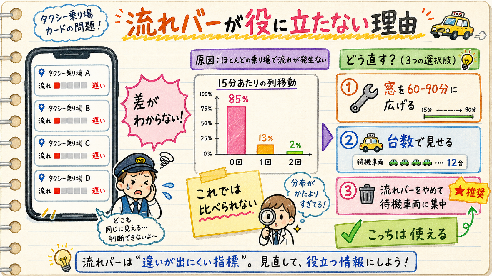

ご指摘の件、実データで測りました。結論から言うと 2つの指標で事情が違い、片方（流れ）は基準の問題ではなく元データが粗すぎて表示に耐えない状態、もう片方（待機車両）は号ごとに基準が違うのが原因でした。

現在の判定は「今の値 ÷ その号の1日の最大値」。ピークは1日に一度しか来ないので、それ以外は全部下位に落ちます。実データの出方：
| 号 | 遅い | 普通 | 速い |
|---|---|---|---|
| 1号 | 91% | 5% | 3% |
| 2号 | 90% | 7% | 2% |
| 3号 | 88% | 8% | 3% |
| 4号 | 71% | 26% | 2% |
出典: 本番配信中の advance-forecast.json（96枠×4号）で現行ロジックを再現。
列移動の実測は 15分あたり0回が85%（1回が13%、2回が2%）。通常値の中央値は0.1回＝2時間半に1回の世界です。
この粒度では「今日は普段の何倍」を計算しても、0回と1回の間を行き来するだけでノイズになります。窓を広げると多少ましになりますが、それでも足りません：
| 集計する時間幅 | 1号 | 2号 | 3号 | 4号 |
|---|---|---|---|---|
| 15分（現行） | 0% | 0% | 6% | 0% |
| 30分 | 4% | 0% | 14% | 1% |
| 60分 | 15% | 11% | 43% | 13% |
| 90分 | 27% | 24% | 46% | 31% |
「意味のある比較ができた枠の割合」（通常値の合計が1回以上ある枠）。90分に広げても、1〜2号は4回に3回が判定不能。
埋まり率は0〜100%の連続値なので分布は散らばっています。ただし号ごとの出方がまるで違います（昼）：
| 号 | 0段 | 1段 | 2段 | 3段 | 4段 | 5段 | いつもの姿 |
|---|---|---|---|---|---|---|---|
| 1号 | 20% | 7% | 11% | 12% | 26% | 20% | やや多め寄り |
| 2号 | 18% | 5% | 4% | 5% | 15% | 49% | 半分の時間が満 |
| 3号 | 18% | 6% | 12% | 23% | 27% | 11% | 中央寄り |
| 4号 | 8% | 14% | 24% | 24% | 19% | 8% | 2〜3段が定位置 |
つまり 「4号が4段」＝かなり混んでいる（普段より上）、「2号が4段」＝むしろ空いている方（普段は5段）。同じ見た目なのに意味が逆です。ここが「差がわかりにくい」のもう一つの正体です。
流れ（1〜3から1つ）と待機車両（4か5）をそれぞれお選びください。「1と4」のような回答でOK。
流れバーは畳む（推奨）
常時「遅い」で情報がないので、カードから外して詳細（タップ後）に格下げ。空いたスペースは待機車両と到着便に。計測は続けるので、データが濃くなれば戻せます。
集計幅を60〜90分に広げて残す
3号は使えるようになる（判定可能43〜46%）が、1〜2号は依然4回に3回が「判定なし」。「今この瞬間」ではなく「この1時間半の傾向」の意味に変わります。
台数に換算して見せる
列移動1回＝横に並ぶ台数（7〜8台）なので「直近1時間でおよそ◯台はけた」に変換。数字は大きくなり体感に近づきますが、元の粗さは変わりません（0台か8台か、の飛び方になる）。
待機車両に「その号の普段」の目盛りを出す（推奨）
流れバーにある「通常」マーカーと同じものを待機車両バーにも付ける。2号の4段は「普段より少ない」、4号の4段は「普段より多い」と一目で分かるようになります。
待機車両は今のまま（絶対量だけ）
「満車かどうか」の物理的な意味は今の方が素直。号ごとの癖はご自身の経験で補正する前提。